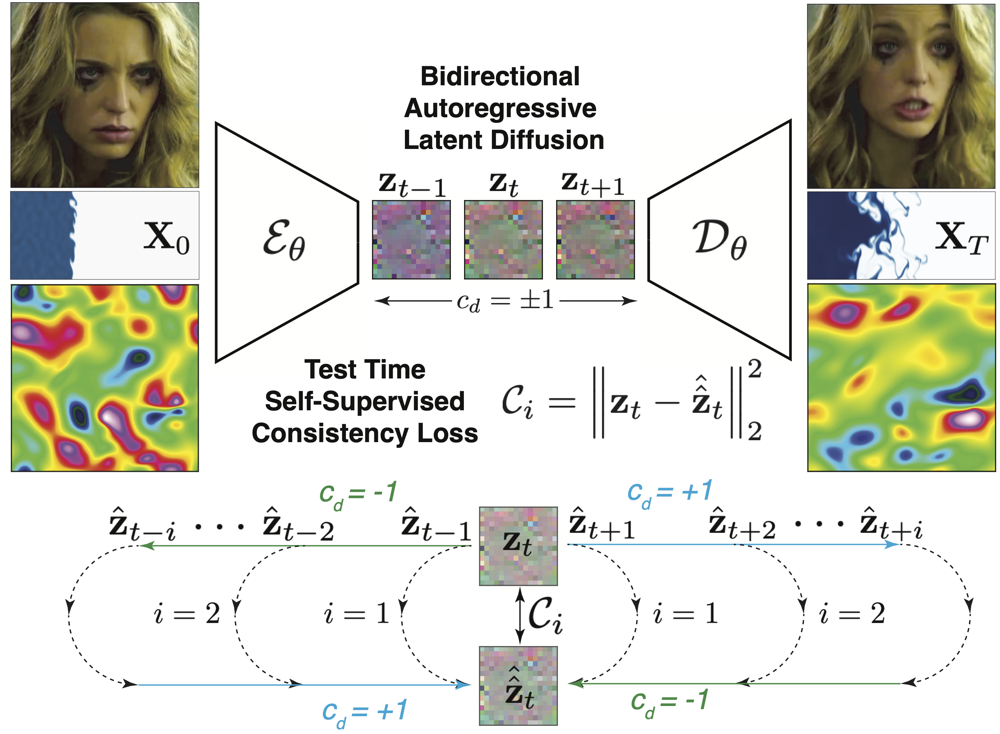
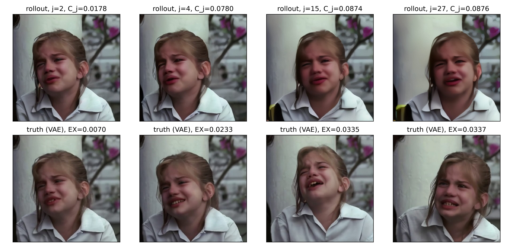
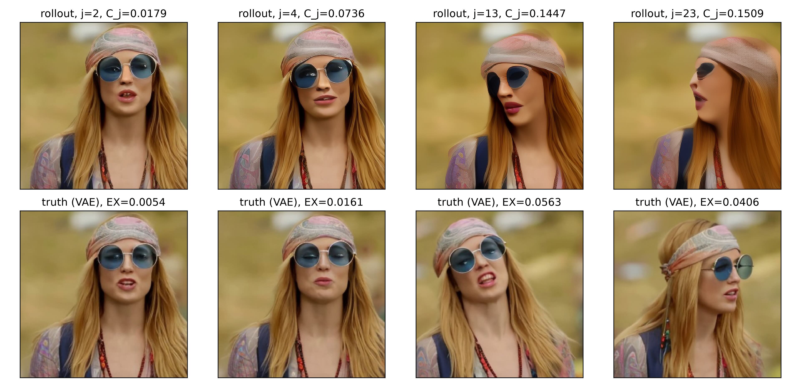
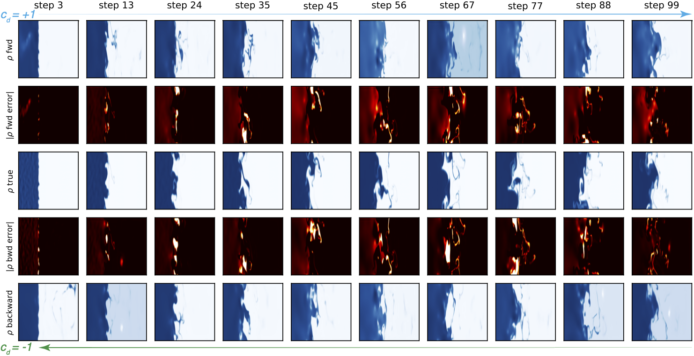
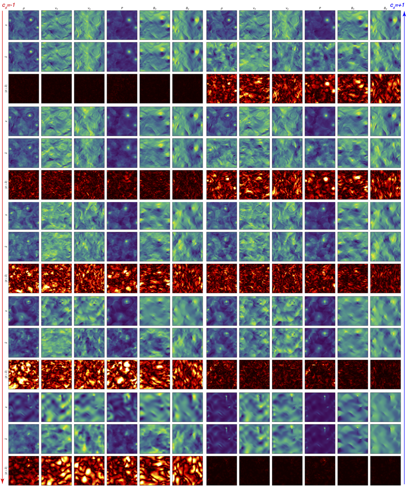
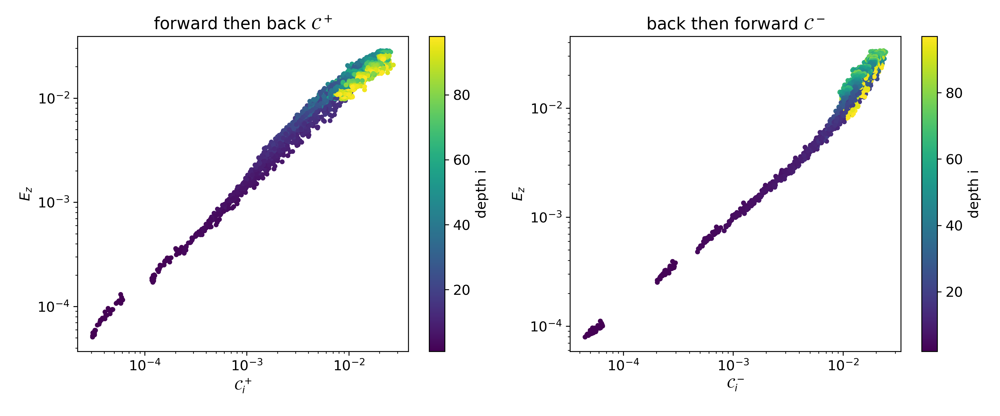

Round-Trip Consistency
Bidirectional diffusion models can predict their own rollout errors.
In brief: for an autoregressive generative model trained to step both forward and backward in time, such as a neural PDE surrogate or a video prediction model, round-trip consistency is a test-time uncertainty estimate that needs no ensemble and no ground truth. Roll the model forward, roll it back, and the distance from where it started predicts the rollout error.
Abstract
Autoregressive models accumulate error over long rollouts, yet at deployment there is no ground truth to measure it against. We train a single conditional latent diffusion model that steps a dynamical system forward or backward in time via a direction flag, and show that this bidirectionality supplies a measurement-free test-time error signal: rolling forward $i$ steps and then backward $i$ steps must return the model to its start, so the round-trip discrepancy $\mathcal{C}_i$ is a self-supervised proxy for the unobservable rollout error: no ensembles, no held-out data, no governing equations, for one extra rollout. We validate on compressible magnetohydrodynamics (MHD), an astrophysical turbulent radiative mixing layer, and natural face videos (CelebV-HQ). On held-out MHD trajectories, $\mathcal{C}_i$ ranks rollout error (Spearman $0.91$-$0.98$ at fixed depth; $0.69 \pm 0.16$ within trajectories), and a simple calibrator fit on training rollouts predicts its magnitude to within $1.14\times$ ($68\%$) and $1.29\times$ ($95\%$) with near-nominal coverage - one nat beyond a depth-only predictor, transferring to all six decoded physical fields. The same signal flags the out-of-distribution Orszag-Tang vortex (AUROC $0.98$; $1.0$ by depth $10$) exactly where sampling-dispersion baselines invert, and it cuts incurred error by $15\%$ at $80\%$ coverage - three times the depth-only baseline. Bidirectional training comes at negative cost, beating direction specialists in both directions, and the backward direction doubles as a fast inverse solver. On LE-PDE-UQ's turbulent Navier-Stokes benchmark, a single bidirectional model reaches accuracy within $1.3\times$ of their ten-model ensemble at a tenth of the training cost, with the best training-free pixel-level calibration. Round-trip consistency turns reversibility into a practical trust signal for generative models.

This image gives a high level overview of the overall setup. High dimensional images are first encoded into much lower dimensional representations by a VAE. A bidirectional latent diffusion model is then trained to autoregressively roll out forward or backward in time based on a directional flag $c_d=\pm1$. After rolling out $i$ steps, if $c_d$ is reversed, the prediction should return to where it started. The consistency error, the difference between the start and return, is a self-supervised test-time metric for model prediction error without relying on access to the unknown ground truth.
This figure shows that we can use our roundtrip consistency signal $\mathcal{C}_i$ to accurately predict the error of the autoregressively rolled out latent images as well as the 6 physical MHD fields that are generated by decoding the latent images. The figure shows mean and $\pm2 \sigma$ envelopes that were fit on training data and the black dots are for unseen test data.


For CelebV-HQ data, videos of human faces, there is no fixed underlying PDE-based model, the problem of rolling out is that of video generation and by providing only the first 2 frames we are creating an incredibly difficult and ill-defined problem. In this case the approach is still able to detect, via $\mathcal{C}_i$ how bad or out of distribution its rollouts are and when plausible images are created, which can be rolled back, $\mathcal{C}_i$ remains low.

Demonstration of the model autoregressively rolling out forward or backward in time, where it acts as an inverse solver, for turbulent Navier-Stokes fluid dynamics data.

Demonstration of the model autoregressively rolling out forward or backward in time, where it acts as an inverse solver, for MHD data.

This figure plots the MSE of autoregressively rolled out latent images for MHD data against consistency error $\mathcal{C}_i$, colored by rollout depth $i$. On the left are forward then back rollout results and on the right are inverse problem solving results in which we start at the end, $z[T]$ and roll backwards towards $z[0]$, reversing at various depths $i$. In both cases there is a strong correlation between $\mathcal{C}_i$ and MSE of predicted $z_i$.
Reference
@misc{scheinker2026roundtripconsistencybidirectionaldiffusion,
title={Round-Trip Consistency: Bidirectional Diffusion Models Can Predict Their Own Rollout Errors},
author={Alexander Scheinker},
year={2026},
eprint={2608.00675},
archivePrefix={arXiv},
primaryClass={stat.ML},
url={https://arxiv.org/abs/2608.00675},
}